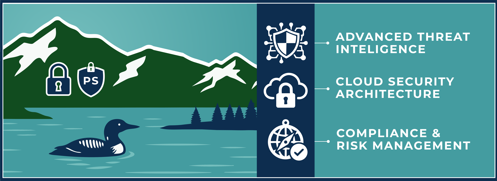

Placid Security is an independent cybersecurity consulting firm based in Lake Placid, New York. We help organizations understand their risk, test their defenses, respond to incidents, and build security programs that work.
Every engagement is led by Kevin Geil, GIAC Security Expert (GSE #357), CISSP, and MSISE, with real hands-on experience across penetration testing, incident response, GRC, and CISO advisory. No junior staff, no outsourced delivery.
Network, web application, and Active Directory assessments following industry standards, with expert-written reports and actionable remediation guidance.
Rapid containment, digital forensics, threat eradication, and recovery support. Incident response planning and tabletop exercises that test your team before a real incident does.
Identify and reduce your external exposure before adversaries do. Continuous visibility into your assets, open ports, and exploitable entry points.
Azure and AWS security assessments focused on identity, IAM configuration, and cloud architecture review to close misconfigurations and privilege escalation paths.
Framework-based program development and compliance assessment across PCI-DSS, HIPAA, NIST CSF, and CIS Critical Controls.
Strategic security leadership for organizations without a full-time CISO. Board-ready communication, risk prioritization, and program roadmapping.
Whether you need a penetration test, incident response support, or help building your security program — let's talk.
Schedule a Conversation